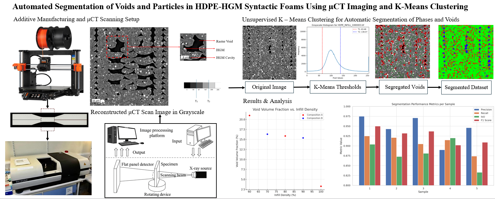
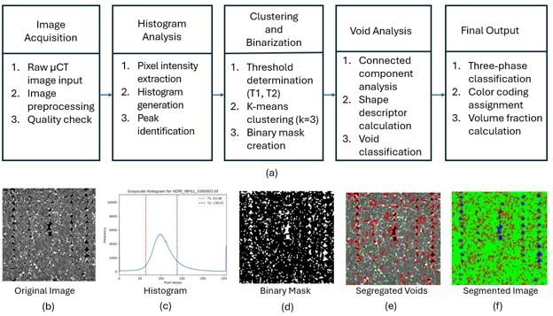
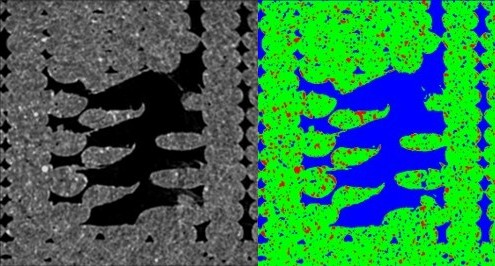
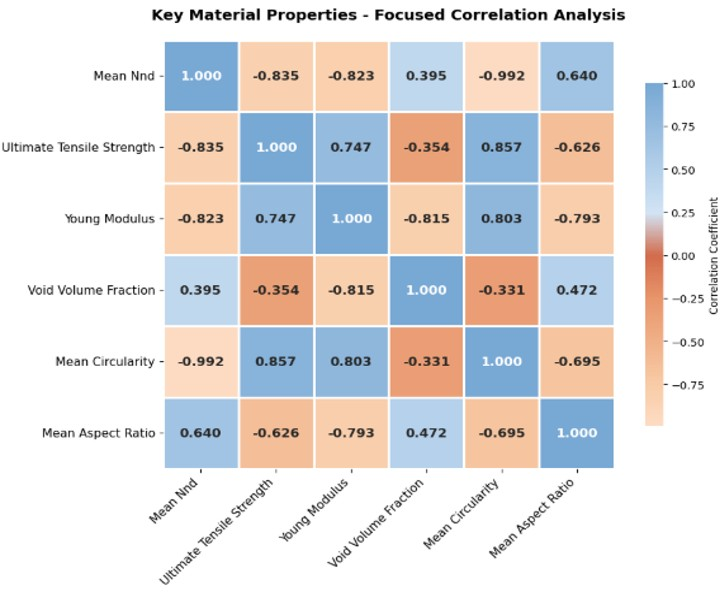

Master's Thesis · Micro-CT Materials Analysis
Automated Segmentation of Voids and Particles in HDPE-HGM Syntactic Foams
Computer Vision & Non-Destructive Testing
An unsupervised image-analysis pipeline for identifying hollow glass microspheres and print-induced voids, then connecting their three-dimensional structure to mechanical performance.

The challenge
Syntactic foams contain intentional hollow microsphere porosity alongside print-induced defects. Separating these features in three-dimensional scans is difficult, while conventional destructive testing can be slow, wasteful, and inconclusive.
This work uses K-means clustering with local neighborhood refinement to distinguish material phases and correct errors near phase boundaries, without relying on large manually annotated training sets.
Key contribution
An automated, unsupervised workflow combines Python, OpenCV, and scikit-learn to quantify void morphology and direction-dependent alignment from micro-CT data. The measurements reveal anisotropic defect formation and support direct structure-property comparisons in 3D-printed syntactic foams.

Segmentation workflow
The pipeline classifies reconstructed scan data into material phases, then refines local neighborhoods to reduce boundary misclassification. This makes the analysis repeatable while avoiding the annotation burden of a supervised training pipeline.

Orientation and morphology
Direction-dependent void alignment and morphology provide a view of how defects form relative to the print path. The analysis distinguishes raster voids from hollow glass microsphere cavities and quantifies their anisotropic distribution.
Results and tooling
Correlations, infill behavior, and an open-source workflow for exploring the measured structure-property relationships.

Structure-property relationships
Pearson correlation analysis compares void geometry with mechanical properties, including ultimate tensile strength and Young's modulus.
At 100% infill, the total void count was highest, while individual voids were smaller and more uniformly distributed.

Automated defect and void analysis GUI
To make the workflow practical for repeated use, I built a Python graphical interface for automated defect and void analysis. The GUI streamlines the end-to-end process from loading a micro-CT dataset to identifying voids, segmenting phases, and reviewing morphological metrics.
It turns the research pipeline into an accessible tool for rapid inspection, reducing manual effort while preserving the same unsupervised segmentation logic used in the analysis.
Broader Industry Applications
The utility of this unsupervised computer vision pipeline extends far beyond syntactic foams. By eliminating destructive testing, this framework delivers rapid defect classification and predictive modeling across 10 high-performance sectors:
- Aerospace & Defense: Flight-critical structural core inspection.
- Marine & Subsea: Buoyancy module permeability prediction.
- Biomedical Engineering: 3D-printed implant and bone porosity analysis.
- Automotive: Lightweight crash-structure optimization.
- Additive Manufacturing: Automated QA for industrial 3D printing.
- Materials Science R&D: Digital twins and FEA mesh generation.
- Renewable Energy: Wind turbine blade delamination screening.
- Electronics Packaging: Solder joint and thermal void detection.
- Civil Infrastructure: Concrete microcrack and porosity mapping.
- High-Performance Sports: Carbon-fiber core stress evaluation.